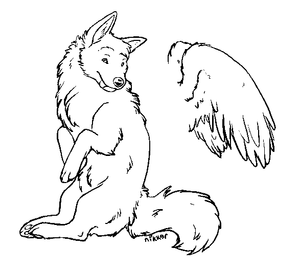
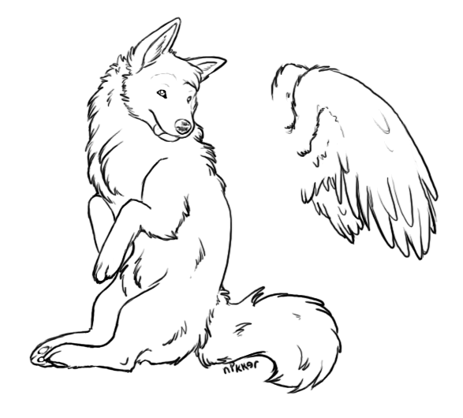

Hello kitysa, and welcome to Aycis's page. There's not a whole lot here, but we appreciate your visit.
Appearance

| Fur | Silky, nearly-white gray |
|---|---|
| Eyes | Slit pupils, red irises, black "whites". |
| Hair | Straight and black, one very long braid from her right side. In anthro or biped form, she has shoulder-length hair outside of the braid. |
| Ears | Large and attentive |
Bio
| Name | Aycis Areyli |
|---|---|
| Paint job | Stealthy Gelert |
| Gender | Female |
| Stats | Level: 30 HP: 60/60 Strength: 45 Speed: 28 Defense: 25 Intelligence: 22 |
Adoptables
Sorry, these adoptables are now considered expired. I will not be taking requests on these at any time in the future. You can still pick up the defaults, though.

|
|


 Nheviel
Nheviel


Makeables
Pixelated Anti-Aliased
(Drag to the URL bar for full size.)